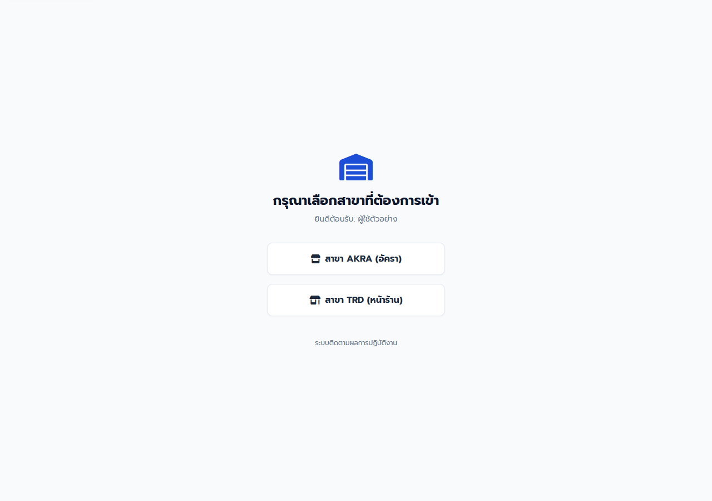
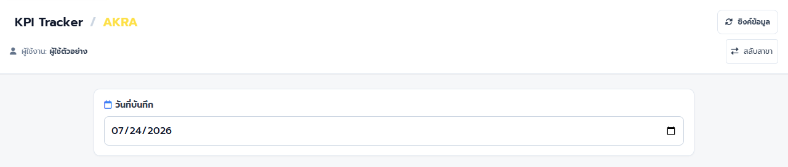
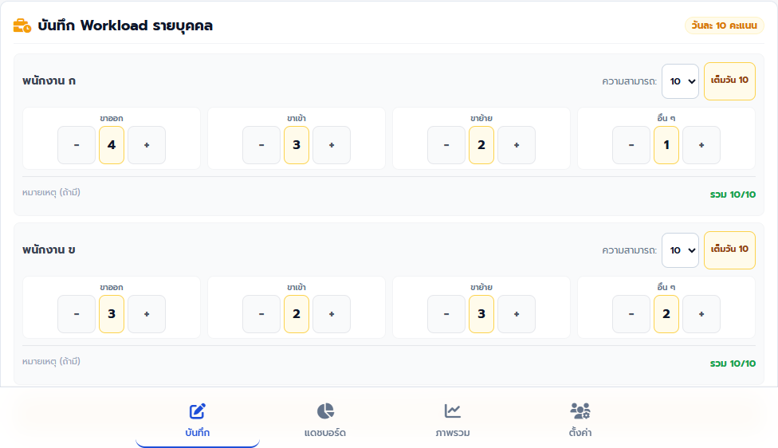
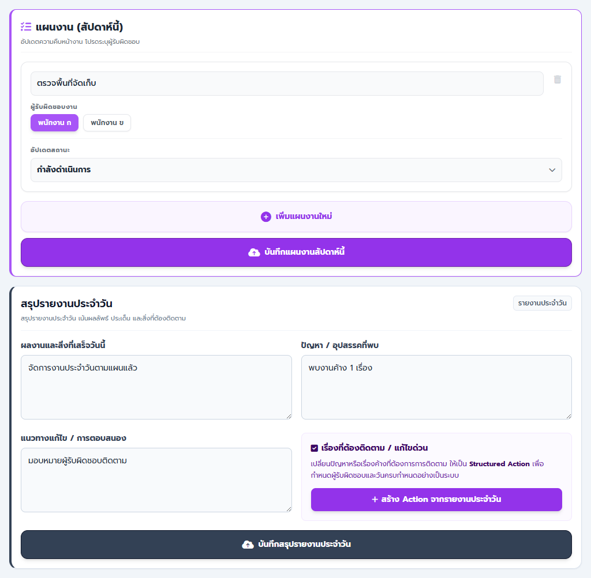
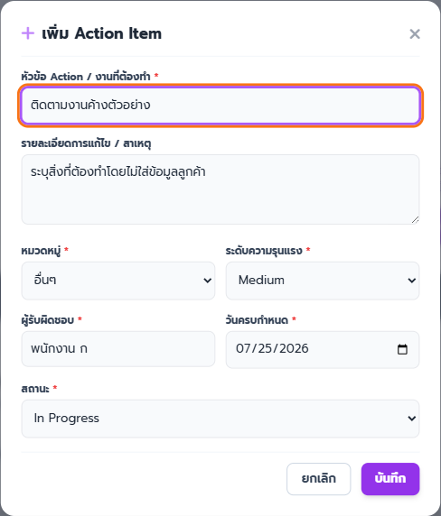
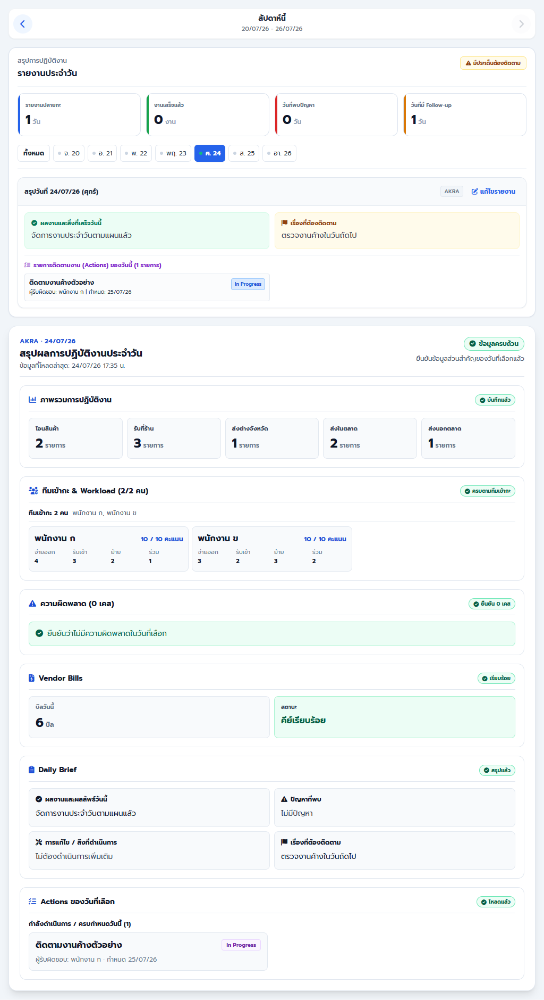
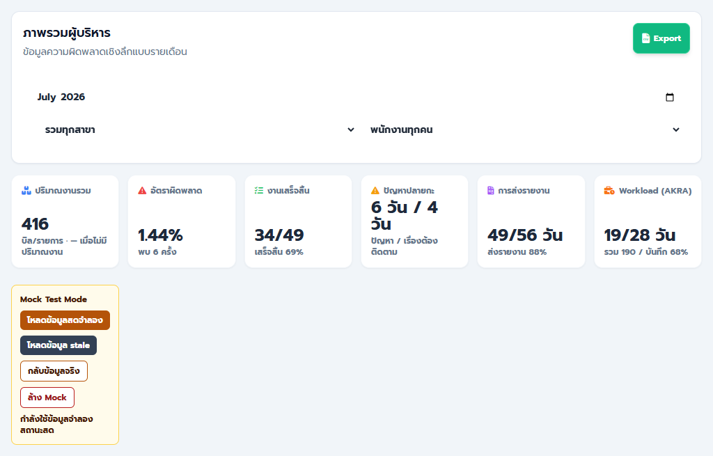
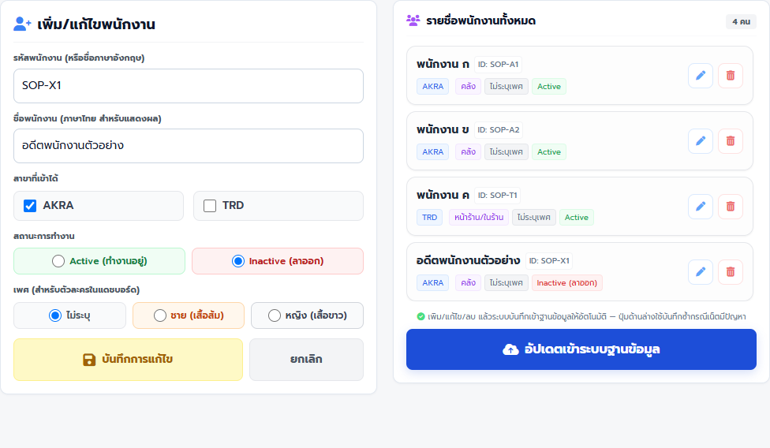

คู่มือพนักงาน · KPITracker — บันทึกงานและรายงานประจำวัน
คู่มือบันทึกงานและอ่านรายงาน KPITracker
บันทึกแต่ละส่วนของงานประจำวันให้ตรงสาขาและวันที่ ติดตาม Action และอ่านรายงานโดยไม่ทำข้อมูลซ้ำหรือเปิดเผยข้อมูลภายใน
ฉบับทดสอบภายใน: ใช้ตรวจขั้นตอนและความเข้าใจก่อนประกาศใช้
ส่วนที่ 1
เตรียมก่อนเริ่ม
- เปิด KPITracker ผ่าน Main Portal และตรวจชื่อผู้ใช้งาน
- เตรียมสาขา วันที่ทำงานจริง ปริมาณงาน เหตุผิดพลาด งานค้าง และผู้รับผิดชอบ
- รอบสัปดาห์ของ AKRA และ TRD คือวันจันทร์ถึงวันอาทิตย์
- คู่มือนี้ตรวจจากรุ่น 20260719.02 ที่อยู่ในเครื่องและ push แล้ว; รุ่น hosted ที่ยืนยันล่าสุดคือ 20260715.01 จนกว่าจะมีการ deploy ใหม่
ส่วนที่ 2
ทำตามขั้นตอน
-
พนักงาน AKRA/TRD
เลือกสาขาที่กำลังทำงาน
ทำ: เลือก “สาขา AKRA (อัครา)” หรือ “สาขา TRD (หน้าร้าน)” ให้ตรงกับงานจริง
เช็ก: ชื่อสาขาแสดงที่หัวหน้า KPI Tracker และข้อมูลของอีกสาขาไม่ปะปน

เลือกสาขาก่อนกรอกทุกครั้ง หากเลือกผิดให้สลับสาขาก่อนเริ่มบันทึก ภาพอ้างอิง KPITRACKER 20260719.02-local-review -
พนักงาน AKRA/TRD
เลือกวันที่และโหลดข้อมูลล่าสุด
ทำ: ตรวจสาขาที่หัวหน้า เลือก “วันที่บันทึก” เป็นวันที่ทำงานจริง และกด “ซิงค์ข้อมูล” เมื่อต้องการข้อมูลล่าสุด
เช็ก: หัวหน้าแสดงสาขาถูกต้อง วันที่ตรงกับงาน และระบบแจ้งว่าซิงค์ข้อมูลล่าสุดเรียบร้อย

สาขาและวันที่เป็นขอบเขตของทุกการ์ด ตรวจทั้งสองจุดก่อนกรอก ภาพอ้างอิง KPITRACKER 20260719.02-local-review -
พนักงานผู้รับผิดชอบการ์ด
บันทึกการ์ดประจำวันทีละส่วน
ทำ: กรอกเฉพาะการ์ดที่รับผิดชอบ แล้วกดปุ่มของการ์ดนั้น: “บันทึก Workload”, “บันทึกความผิดพลาด”, “บันทึก Vendor Bills” หรือ “บันทึกข้อมูลงานประจำวัน”
เช็ก: เห็นข้อความสำเร็จของการ์ดนั้น ข้อมูลส่วนอื่นของวันเดียวกันยังอยู่ และเปลี่ยนวันที่หรือสาขาได้หลังบันทึกเสร็จ

ตัวอย่างรูปแบบการบันทึกแยกการ์ด ปุ่ม “เต็มวัน 10” ตั้ง Capacity ของ Workload เป็น 10 เท่านั้น ภาพอ้างอิง KPITRACKER 20260719.02-local-review -
พนักงาน AKRA/TRD
บันทึกแผนสัปดาห์และสรุปรายวัน
ทำ: เพิ่มงานใน “แผนงาน (สัปดาห์นี้)” แล้วกด “บันทึกแผนงานสัปดาห์นี้”; จากนั้นกรอก “สรุปรายงานประจำวัน” และกด “บันทึกสรุปรายงานประจำวัน”
เช็ก: แผนใช้ร่วมกันตลอดสัปดาห์จันทร์–อาทิตย์ และรายงานของวันที่เลือกแสดงผลลัพธ์ ปัญหา การแก้ไข และเรื่องติดตามตามจริง

แผนงานสัปดาห์นี้
สรุปรายงานประจำวันและสร้าง Action
บันทึกแผนสัปดาห์และ Daily Brief ด้วยปุ่มของแต่ละการ์ด หากเรื่องต้องมีเจ้าของให้สร้าง Action ภาพอ้างอิง KPITRACKER 20260719.02-local-review -
ผู้ใช้ Main SSO ที่รับผิดชอบ Action
สร้างและอัปเดต Action ที่ต้องติดตาม
ทำ: กด “สร้าง Action จากรายงานประจำวัน”, “เพิ่ม Action” หรือ “สร้าง Action ใหม่” ใส่หัวข้อ Owner, Due Date, Severity และรายละเอียด แล้วอัปเดตสถานะตามจริง
เช็ก: Action อยู่ในสาขาและวันที่ถูกต้อง สถานะเป็น Open, In Progress, Blocked, Resolved หรือ Cancelled; เมื่อปิดงานมี Resolution Note

ใช้ Action สำหรับเรื่องที่ต้องมีเจ้าของและกำหนดส่ง ห้ามใส่ชื่อลูกค้าหรือข้อมูลส่วนตัวที่ไม่จำเป็น ภาพอ้างอิง KPITRACKER 20260719.02-local-review -
ผู้มีสิทธิ์ดูรายงานของทีม
ตรวจ Dashboard ของสัปดาห์และวันที่เลือก
ทำ: เปิด “แดชบอร์ด” เลือกสัปดาห์ แล้วเลือกวันใน “รายงานประจำวัน” เพื่อตรวจสรุปผลการปฏิบัติงานของวันนั้น
เช็ก: เห็น Daily Report ก่อนสรุปรายวันแบบละเอียด; “ยืนยัน 0 เคส” หมายถึงบันทึกแล้วว่าไม่มีเหตุ ส่วน “ยังไม่ได้สรุป” หมายถึงข้อมูลยังขาด

เลือกวันจากรายงานประจำวัน
สถานะครบ ขาด และยืนยันศูนย์
AKRA มี Workload และ Vendor Bills; TRD ไม่มีสองส่วนนี้ จึงต้องแสดง N/A หรือไม่แสดงแทนการนับเป็นศูนย์ ภาพอ้างอิง KPITRACKER 20260719.02-local-review -
ผู้มีสิทธิ์ adminDashboard เท่านั้น · รายงานผู้บริหาร
วิเคราะห์ Executive Dashboard
ทำ: เปิด “ภาพรวม” เลือกช่วงข้อมูลและสาขา ตรวจ Coverage/Confidence ก่อนอ่าน Executive Cockpit, แนวโน้ม, Pareto และ Executive Action Center
เช็ก: ข้อสรุปอ้างอิงช่วงและสาขาที่เลือก ไม่เทียบตัวเลขเมื่อข้อมูลไม่ครบ และไฟล์ CSV ถูกใช้เฉพาะผู้รับที่ได้รับอนุญาต

ภาพนี้ใช้ Mock Test Mode เท่านั้น รายงานผู้บริหารและ CSV เป็นข้อมูลจำกัดสิทธิ์ ภาพอ้างอิง KPITRACKER 20260719.02-local-review -
Admin ที่มีสิทธิ์ตั้งค่าเท่านั้น · ข้อมูลพนักงาน
เปลี่ยนสถานะพนักงานโดยรักษาประวัติ
ทำ: เปิด “ตั้งค่า” เลือกพนักงาน ตรวจสาขาและแผนก แล้วใช้ “Inactive (ลาออก)” เมื่อหยุดปฏิบัติงานแทนการลบถาวร
เช็ก: พนักงาน Inactive ไม่อยู่ใน roster/Workload ปัจจุบัน แต่ข้อมูลย้อนหลังยังคงอยู่และแสดงป้ายอดีตพนักงานเมื่อเกี่ยวข้อง

ใช้ Inactive เพื่อรักษาประวัติ ห้ามลบถาวรเพียงเพราะพนักงานลาออกหรือหยุดงาน ภาพอ้างอิง KPITRACKER 20260719.02-local-review
ส่วนที่ 3
เช็กก่อนจบงาน
งานเสร็จเมื่อครบทั้ง 5 ข้อ
- สาขาและวันที่ตรงกับงานจริงก่อนบันทึกทุกการ์ด
- แต่ละการ์ดที่รับผิดชอบแสดงข้อความบันทึกสำเร็จ
- Dashboard แยกข้อมูลขาด ข้อมูลศูนย์ และส่วนที่ไม่ใช้กับสาขาได้ถูกต้อง
- Action มี Owner, Due Date, สถานะ และบันทึกปิดงานเมื่อ Resolved/Cancelled
- ไม่มีชื่อลูกค้า หมายเหตุลูกค้า หรือรายละเอียดรายงานภายในถูกส่งออกนอกผู้รับที่ได้รับอนุญาต
ส่วนที่ 4
แก้ปัญหาที่พบบ่อย
เลือกข้อความที่ตรงกับหน้าจอ แล้วทำตามทีละข้อ
การ์ดใดการ์ดหนึ่งบันทึกไม่สำเร็จ
- อย่าเปลี่ยนวันที่ สาขา หรือหน้า
- ตรวจอินเทอร์เน็ตและคงข้อมูลไว้
- กดบันทึกซ้ำเฉพาะการ์ดเดิม
- หลังสำเร็จตรวจ Dashboard ของวันที่เดิม
ระบบแจ้งว่าแท็บเป็นเวอร์ชันเก่า
- หยุดกรอกและกดรีโหลดตามข้อความ
- เลือกสาขาและวันที่ใหม่
- ตรวจข้อมูลล่าสุดก่อนกรอกหรือบันทึกต่อ
TRD บันทึกความผิดพลาดแล้ว แต่ไม่แน่ใจว่าควรกดอีกหรือไม่
- ก่อนเห็นข้อความสำเร็จ การลองซ้ำคือเหตุการณ์เดิม
- หลังเห็นข้อความสำเร็จ ห้ามกดซ้ำ เว้นแต่มีเหตุการณ์ใหม่จริง
- ตรวจวันที่ สาขา และรายการใน Dashboard ก่อนเพิ่มเหตุการณ์
Daily Brief หรือ Action สำเร็จเพียงส่วนเดียว
- ตรวจรายงานประจำวันและ Action Center
- ทำซ้ำเฉพาะส่วนที่ยังไม่มี
- ห้ามสร้าง Action ซ้ำเพื่อให้ดูเหมือนทั้งสองส่วนสำเร็จ
Dashboard แสดง “ยังไม่ได้สรุป”, “ยืนยัน 0 เคส” หรือ N/A
- “ยังไม่ได้สรุป” คือข้อมูลขาด ต้องกลับไปบันทึกการ์ดนั้น
- “ยืนยัน 0 เคส” หรือข้อความว่าไม่มีเหตุ คือบันทึกศูนย์แล้ว
- N/A ของ TRD สำหรับ Workload/Vendor Bills คือสาขานี้ไม่ใช้ข้อมูลนั้น ไม่ใช่ศูนย์
ข้อมูลสาขา วันที่ หรือชื่อพนักงานไม่ตรง
- หยุดบันทึกและอย่าแก้ข้อมูลของอีกสาขา
- กลับไปเลือกสาขาและวันที่ที่ถูกต้อง
- ถ้ารายชื่อหรือสิทธิ์ผิด ให้ Admin ตรวจการตั้งค่า ห้ามใช้บัญชีผู้อื่น
Dashboard แสดงข้อมูลเก่าหรือซิงค์ไม่สำเร็จ
- ตรวจเวลาที่โหลดล่าสุดและป้าย Coverage/Confidence
- กด “ซิงค์ข้อมูล” หนึ่งครั้งเมื่อเครือข่ายพร้อม
- ห้ามสรุปผลผู้บริหารจากข้อมูล stale หรือช่วงที่รายงานขาด
ต้องหยุดและแจ้งหัวหน้า
- หยุดเมื่อเลือกสาขา/วันที่ผิด ไม่แน่ใจว่าบันทึกแล้ว หรือกำลังจะแชร์ Dashboard/CSV นอกผู้รับที่อนุญาต
- ห้ามแก้ข้อมูลพนักงานหรือการตั้งค่าเมื่อไม่มีสิทธิ์ adminDashboard
- การ์ดใดการ์ดหนึ่งบันทึกไม่สำเร็จ
-
- อย่าเปลี่ยนวันที่ สาขา หรือหน้า
- ตรวจอินเทอร์เน็ตและคงข้อมูลไว้
- กดบันทึกซ้ำเฉพาะการ์ดเดิม
- หลังสำเร็จตรวจ Dashboard ของวันที่เดิม
- ระบบแจ้งว่าแท็บเป็นเวอร์ชันเก่า
-
- หยุดกรอกและกดรีโหลดตามข้อความ
- เลือกสาขาและวันที่ใหม่
- ตรวจข้อมูลล่าสุดก่อนกรอกหรือบันทึกต่อ
- TRD บันทึกความผิดพลาดแล้ว แต่ไม่แน่ใจว่าควรกดอีกหรือไม่
-
- ก่อนเห็นข้อความสำเร็จ การลองซ้ำคือเหตุการณ์เดิม
- หลังเห็นข้อความสำเร็จ ห้ามกดซ้ำ เว้นแต่มีเหตุการณ์ใหม่จริง
- ตรวจวันที่ สาขา และรายการใน Dashboard ก่อนเพิ่มเหตุการณ์
- Daily Brief หรือ Action สำเร็จเพียงส่วนเดียว
-
- ตรวจรายงานประจำวันและ Action Center
- ทำซ้ำเฉพาะส่วนที่ยังไม่มี
- ห้ามสร้าง Action ซ้ำเพื่อให้ดูเหมือนทั้งสองส่วนสำเร็จ
- Dashboard แสดง “ยังไม่ได้สรุป”, “ยืนยัน 0 เคส” หรือ N/A
-
- “ยังไม่ได้สรุป” คือข้อมูลขาด ต้องกลับไปบันทึกการ์ดนั้น
- “ยืนยัน 0 เคส” หรือข้อความว่าไม่มีเหตุ คือบันทึกศูนย์แล้ว
- N/A ของ TRD สำหรับ Workload/Vendor Bills คือสาขานี้ไม่ใช้ข้อมูลนั้น ไม่ใช่ศูนย์
- ข้อมูลสาขา วันที่ หรือชื่อพนักงานไม่ตรง
-
- หยุดบันทึกและอย่าแก้ข้อมูลของอีกสาขา
- กลับไปเลือกสาขาและวันที่ที่ถูกต้อง
- ถ้ารายชื่อหรือสิทธิ์ผิด ให้ Admin ตรวจการตั้งค่า ห้ามใช้บัญชีผู้อื่น
- Dashboard แสดงข้อมูลเก่าหรือซิงค์ไม่สำเร็จ
-
- ตรวจเวลาที่โหลดล่าสุดและป้าย Coverage/Confidence
- กด “ซิงค์ข้อมูล” หนึ่งครั้งเมื่อเครือข่ายพร้อม
- ห้ามสรุปผลผู้บริหารจากข้อมูล stale หรือช่วงที่รายงานขาด
- ต้องหยุดและแจ้งหัวหน้า
-
- หยุดเมื่อเลือกสาขา/วันที่ผิด ไม่แน่ใจว่าบันทึกแล้ว หรือกำลังจะแชร์ Dashboard/CSV นอกผู้รับที่อนุญาต
- ห้ามแก้ข้อมูลพนักงานหรือการตั้งค่าเมื่อไม่มีสิทธิ์ adminDashboard